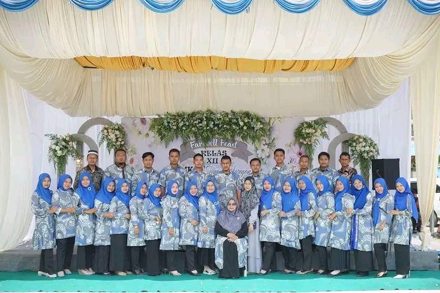

| No | Nama | Jabatan | Pendidikan Terakhir |
|---|---|---|---|
| 1 | Agusnianto, S.Pd | Kepala Sekolah | S1 Bimbingan dan Konseling STKIP Pelita Bangsa Binjai |
| 2 | Mawarda Yusmara Lubis, S.Pd | Wakabid Kurikulum / Guru | S1 Pendidikan Matematika STKIP Budidaya Binjai |
| 3 | Riki Riza Effendi, S.Pd | Wakabid Kesiswaan / Guru | S1 Pendidikan Matematika STKIP Budidaya Binjai |
| 4 | Drs. Arya Darma | Wakabid Sarana dan Prasarana | S1 Pendidikan Tata Niaga UNIMED |
| 5 | Indira Fatra Deni P.A., S.Sos., I., MA | Wakabid Humas | S2 Komunikasi Islam Pascasarjana IAIN Medan |
| 6 | Fauzia Sari, S.Sos | Wakabid Administrasi | S1 Sosial UIN SU |
| 7 | Bambang Sriadi, S.Pd | Guru | S1 Pendidikan Matematika STKIP Budidaya Binjai |
| 8 | Muhammad Afieq Zuhair Lubis, S.Sos | Guru | S1 Sosial UIN SU |
| 9 | Dika Rahayu, S.Pd | Operator Dapodik | S1 Pendidikan Matematika STKIP Budidaya Binjai |
| 10 | Sri Nurhasanah, S.T | Kajur TBSM / Guru | S1 Teknik Industri UISU |
| 11 | Irma Dhanisya Batubara, S.Pd | Kajur OTKP / Guru | S1 Pendidikan Akuntansi UNIMED |
| 12 | Sujarwianto, S.Kom | Kajur TKJ / Guru | S1 Teknik Informatika ITBI |
| 13 | M. Hafidul Mujahid, S.Pd | Guru BK | S1 Bimbingan Konseling STKIP Budidaya Binjai |
| 14 | Suma Al Kurnia Putri, S.Sos | Guru BK | S1 Bimbingan Penyuluhan Islam UIN SU |
| 15 | Siddiq Pratama, S.Kom | Guru / Kepala Lab Komputer | S1 Teknik Informatika ITBI |
| 16 | Rizalul Arifin, SE | Guru / Kepala Lab OTKP | S1 Ekonomi Pembangunan UNPAB |
| 17 | Fitri Amalia, S.Pd | Guru | S1 Pendidikan Luar Sekolah UNIMED |
| 18 | Dewi Sartika, S.Pd | Guru | S1 Pendidikan Bahasa Indonesia STKIP Budidaya Binjai |
| 19 | Nirwansyah, S.Pd | Guru | S1 Pendidikan Kewarganegaraan UNIMED |
| 20 | Erika Ananda, S.Pd | Guru | S1 Pendidikan Bahasa Inggris UIN SU |
| 21 | Oktapia Pratiwi, S.Pd | Guru | S1 Pendidikan Akuntansi UMSU |
| 22 | Aprida Syafira Siregar, S.Kom | Guru | S1 Sistem Komputer UNPAB |
| 23 | Nurmala Sari, S.Pd | Guru | S1 Pendidikan Bahasa Indonesia STKIP Budidaya Binjai |
| 24 | Atika, A.Md | Guru | D3 Manajemen Informatika AMIK MBP |
| 25 | Nurul Annisa Lubis, S.Pd.I | Guru | S1 Pendidikan Agama Islam UIN SU |
| 26 | Anggun Kesumastuty, S.Pd | Guru | S1 Pendidikan Matematika STKIP Budidaya Binjai |
| 27 | Reza Irfanka, S.Pd | Guru | S1 Ilmu Administrasi Publik USU |
| 28 | Riska Ramadani, S.Kom | Guru | S1 Teknik Informatika ITBI |
| 29 | Dita Mayang Sari, S.Pd | Guru | Semester Akhir Pendidikan Bahasa Inggris UINSU |
| 30 | Muhammad Iqbal, A.Md | Guru | D3 Teknologi Komputer LP3I Sei Serayu |
| 31 | Miftahul Husna, S.Pd | Guru | S1 Pendidikan Agama Islam STIT Ar Raudhah |
| 32 | Yusnita Wardani, S.Pd | Guru | S1 Pendidikan Akuntansi UMSU |
| 33 | Amalia Cempaka Dewi, S.Pd | Guru | S1 Pendidikan Fisika UNIMED |
| 34 | Widya Sari, S.Pd | Guru | S1 Pendidikan Sejarah UNSAM Langsa |
| 35 | Wahyu Casanova Sinuraya, S.T | Guru | S1 Teknik Mesin UMSU |
| 36 | Rahma Fadhillah, S.IP | Pustakawan | S1 Ilmu Perpustakaan UIN SU |
| 37 | Ninda Sari Irawan | Tata Usaha | SMK Administrasi Perkantoran |